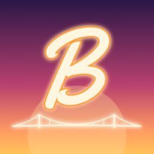

Bosphorus: İstanbul Vapuru
Destek
Soru, hata bildirimi ya da öneri için: bosphorus@finjet.ai
Hata bildirirken cihazınızı, iOS sürümünü ve ne yaptığınızı yazarsanız daha çabuk çözeriz.
Sık sorulanlar
Tam Sürüm neleri açar?
Haliç ve ilk gemiler ücretsizdir. Tek seferlik Tam Sürüm satın alımı şehir hattı vapurunu, Adalar'ı ve sonraki gemileri açar. Abonelik ve reklam yoktur.
Satın aldım ama açılmadı, ya da yeni cihaza geçtim
Ayarlar › Tam Sürüm sayfasında Satın alımları geri yükle'ye dokunun. Satın alım aynı Apple hesabıyla yapıldıysa Tam Sürüm yeniden açılır; ikinci kez ödeme alınmaz.
Gemiyi iskeleye nasıl yanaştırırım?
İskeleye yavaş yaklaşın, son metrelerde makineyi Dur'a alın ve iskeleye paralel gelin. Bağlama yerine yaklaşınca Halatları At düğmesi çıkar. Yeni başlıyorsanız Ayarlar › Oyun'dan yanaşmayı Kılavuz'a alabilirsiniz; kılavuz gemiyi sizin yerinize yanaştırır.
Game Center'da puanım görünmüyor
Cihazın Ayarlar › Game Center bölümünden oturum açık olmalıdır. Puanlar sefer bitince gönderilir; görünmesi birkaç dakika sürebilir.
Oyun kaydım nerede?
Yalnızca cihazınızda. Uygulamayı silerseniz ilerleme de silinir; Tam Sürüm hakkı ise geri yüklenebilir.
Bosphorus: Istanbul Ferry
Support
The game's text is in Turkish; these notes give the in-game names. Questions, bug reports or ideas: bosphorus@finjet.ai
When reporting a bug, tell us your device, iOS version and what you were doing; it helps us fix it faster.
FAQ
What does the Full Version unlock?
The Golden Horn and the first ships are free. A one-time Full Version purchase unlocks the city ferry, the Islands and the ships beyond. No subscription, no ads.
I bought it but it isn't unlocked, or I moved to a new device
Open Ayarlar › Tam Sürüm (Settings › Full Version) and tap Satın alımları geri yükle (Restore purchases). If you bought it with the same Apple ID, the Full Version unlocks again at no extra charge.
How do I dock at a pier?
Approach slowly, set the engine to Stop for the last metres and come in parallel to the pier. Near the berth a Halatları At (lines ashore) button appears. If you're new, choose Kılavuz (pilot) under Ayarlar › Oyun; it docks the ship for you.
My score doesn't show in Game Center
Make sure you're signed in under Settings › Game Center on your device. Scores are sent when a trip ends and may take a few minutes to appear.
Where is my save game?
Only on your device. Deleting the app deletes your progress; the Full Version can always be restored.